7 Exploring Data
After all that hard work (unless you already had clean data lying around), it’s time for some fun. Now that you have obtained and scrubbed your data, you can continue with the third step of the OSEMN model, which is to explore it.
Exploring is the step where you familiarize yourself with the data. Being familiar with the data is essential when you want to extract any value from it. For example, knowing what kind of features the data has, means you know which ones are worth further exploration and which ones you can use to answer any questions that you have.
Exploring your data can be done from three perspectives. The first perspective is to inspect the data and its properties. Here, you want to find out things like what the raw data looks like, how many data points the dataset has, and which features the dataset has.
The second is to compute descriptive statistics. This perspective is useful for learning more about the individual features. The output is often brief and textual and can therefore be printed on the command line.
The third perspective is to create visualizations of the data. From this perspective you can gain insight into how multiple features interact. I’ll discuss a way of creating visualizations that can be printed on the command line. However, visualizations are best suited to be displayed on a graphical user interface. An advantage of data visualizations over descriptive statistics is that they are more flexible and that they can convey much more information.
7.1 Overview
In this chapter, you’ll learn how to:
- Inspect the data and its properties
- Compute descriptive statistics
- Create data visualizations inside and outside the command line
This chapter starts with the following files:
cd /data/ch07
l
total 104K
-rw-r--r-- 1 dst dst 125 Nov 8 14:56 datatypes.csv
-rw-r--r-- 1 dst dst 7.8K Nov 8 14:56 tips.csv
-rw-r--r-- 1 dst dst 4.6K Nov 8 14:56 venture-wide.csv
-rw-r--r-- 1 dst dst 83K Nov 8 14:56 venture.csvThe instructions to get these files are in Chapter 2. Any other files are either downloaded or generated using command-line tools.
7.2 Inspecting Data and its Properties
In this section I’ll demonstrate how to inspect your dataset and its properties. Because the upcoming visualization and modeling techniques expect the data to be in a rectangular shape, I’ll assume that the data is in CSV format. You can use the techniques described in Chapter 5 to convert your data to CSV if necessary.
For simplicity sake, I’ll also assume that your data has a header. In the first subsection I’ll show a way to determine whether that’s the case. Once you know you have a header, you can continue answering the following questions:
- How many data points and features does the dataset have?
- What does the raw data look like?
- What kind of features does the dataset have?
- Can some of these features be treated as categorical?
7.2.1 Header Or Not, Here I Come
You can check whether your file has a header by printing the first few lines using head:
head -n 5 venture.csv
FREQ,TIME_FORMAT,TIME_PERIOD,EXPEND,UNIT,GEO,OBS_STATUS,OBS_VALUE,FREQ_DESC,TIME
_FORMAT_DESC,TIME_PERIOD_DESC,OBS_STATUS_DESC,EXPEND_DESC,UNIT_DESC,GEO_DESC
A,P1Y,2015,INV_VEN,PC_GDP,CZ,,0.002,Annual,Annual,Year 2015,No data,"Venture cap
ital investment (seed, start-up and later stage) ",Percentage of GDP,Czechia
A,P1Y,2007,INV_VEN,PC_GDP,DE,,0.034,Annual,Annual,Year 2007,No data,"Venture cap
ital investment (seed, start-up and later stage) ",Percentage of GDP,Germany
A,P1Y,2008,INV_VEN,PC_GDP,DE,,0.039,Annual,Annual,Year 2008,No data,"Venture cap
ital investment (seed, start-up and later stage) ",Percentage of GDP,Germany
A,P1Y,2009,INV_VEN,PC_GDP,DE,,0.029,Annual,Annual,Year 2009,No data,"Venture cap
ital investment (seed, start-up and later stage) ",Percentage of GDP,GermanyIf the lines wrap around, add line numbers using nl:
head -n 3 venture.csv | nl
1 FREQ,TIME_FORMAT,TIME_PERIOD,EXPEND,UNIT,GEO,OBS_STATUS,OBS_VALUE,FREQ_D
ESC,TIME_FORMAT_DESC,TIME_PERIOD_DESC,OBS_STATUS_DESC,EXPEND_DESC,UNIT_DESC,GEO_
DESC
2 A,P1Y,2015,INV_VEN,PC_GDP,CZ,,0.002,Annual,Annual,Year 2015,No data,"Ven
ture capital investment (seed, start-up and later stage) ",Percentage of GDP,Cze
chia
3 A,P1Y,2007,INV_VEN,PC_GDP,DE,,0.034,Annual,Annual,Year 2007,No data,"Ven
ture capital investment (seed, start-up and later stage) ",Percentage of GDP,Ger
manyAlternatively, you can use trim:
< venture.csv trim 5
FREQ,TIME_FORMAT,TIME_PERIOD,EXPEND,UNIT,GEO,OBS_STATUS,OBS_VALUE,FREQ_DESC,TIM…
A,P1Y,2015,INV_VEN,PC_GDP,CZ,,0.002,Annual,Annual,Year 2015,No data,"Venture ca…
A,P1Y,2007,INV_VEN,PC_GDP,DE,,0.034,Annual,Annual,Year 2007,No data,"Venture ca…
A,P1Y,2008,INV_VEN,PC_GDP,DE,,0.039,Annual,Annual,Year 2008,No data,"Venture ca…
A,P1Y,2009,INV_VEN,PC_GDP,DE,,0.029,Annual,Annual,Year 2009,No data,"Venture ca…
… with 536 more linesIn this case, it’s clear that the first line is a header because it contains only uppercase names and the subsequent lines contain numbers. This is indeed quite a subjective process and it’s up to you to decide whether the first line is a header or already the first data point. When the dataset contains no header, you’re best off using the header tool (discussed in Chapter 5) to correct that.
7.2.2 Inspect All The Data
If you want to inspect the raw data at your own pace, then it’s probably not a good idea to use cat, because then all the data will be printed in one go. I recommend using less1, which allows you to interactively inspect your data in the command line. You can prevent long lines (as with venture.csv) from wrapping by specifying the -S option:
less -S venture.csvFREQ,TIME_FORMAT,TIME_PERIOD,EXPEND,UNIT,GEO,OBS_STATUS,OBS_VALUE,FREQ_DESC,TIM>
A,P1Y,2015,INV_VEN,PC_GDP,CZ,,0.002,Annual,Annual,Year 2015,No data,"Venture ca>
A,P1Y,2007,INV_VEN,PC_GDP,DE,,0.034,Annual,Annual,Year 2007,No data,"Venture ca>
A,P1Y,2008,INV_VEN,PC_GDP,DE,,0.039,Annual,Annual,Year 2008,No data,"Venture ca>
A,P1Y,2009,INV_VEN,PC_GDP,DE,,0.029,Annual,Annual,Year 2009,No data,"Venture ca>
A,P1Y,2010,INV_VEN,PC_GDP,DE,,0.029,Annual,Annual,Year 2010,No data,"Venture ca>
A,P1Y,2011,INV_VEN,PC_GDP,DE,,0.029,Annual,Annual,Year 2011,No data,"Venture ca>
A,P1Y,2012,INV_VEN,PC_GDP,DE,,0.021,Annual,Annual,Year 2012,No data,"Venture ca>
A,P1Y,2013,INV_VEN,PC_GDP,DE,,0.023,Annual,Annual,Year 2013,No data,"Venture ca>
A,P1Y,2014,INV_VEN,PC_GDP,DE,,0.021,Annual,Annual,Year 2014,No data,"Venture ca>
A,P1Y,2015,INV_VEN,PC_GDP,DE,,0.025,Annual,Annual,Year 2015,No data,"Venture ca>
A,P1Y,2007,INV_VEN,PC_GDP,DK,,0.092,Annual,Annual,Year 2007,No data,"Venture ca>
A,P1Y,2008,INV_VEN,PC_GDP,DK,,0.074,Annual,Annual,Year 2008,No data,"Venture ca>
A,P1Y,2009,INV_VEN,PC_GDP,DK,,0.051,Annual,Annual,Year 2009,No data,"Venture ca>
A,P1Y,2010,INV_VEN,PC_GDP,DK,,0.059,Annual,Annual,Year 2010,No data,"Venture ca>
:The greater-than signs on the right indicate that you can scroll horizontally. You can scroll up and down by pressing Up and Down. Press Space to scroll down an entire screen. Scrolling horizontally is done by pressing Left and Right. Press g and G to go to start and the end of the file, respectively. Quitting less is done by pressing q. The manual page lists all the available key bindings.
One advantage of less is that it does not load the entire file into memory, which means it’s fast even for viewing large files.
7.2.3 Feature Names and Data Types
The column (or feature) names may indicate the meaning of the feature. You can use the following head and tr combo for this:
< venture.csv head -n 1 | tr , '\n'
FREQ
TIME_FORMAT
TIME_PERIOD
EXPEND
UNIT
GEO
OBS_STATUS
OBS_VALUE
FREQ_DESC
TIME_FORMAT_DESC
TIME_PERIOD_DESC
OBS_STATUS_DESC
EXPEND_DESC
UNIT_DESC
GEO_DESCThis basic command assumes that the file is delimited by commas. A more robust approach is to use csvcut:
csvcut -n venture.csv
1: FREQ
2: TIME_FORMAT
3: TIME_PERIOD
4: EXPEND
5: UNIT
6: GEO
7: OBS_STATUS
8: OBS_VALUE
9: FREQ_DESC
10: TIME_FORMAT_DESC
11: TIME_PERIOD_DESC
12: OBS_STATUS_DESC
13: EXPEND_DESC
14: UNIT_DESC
15: GEO_DESCYou can go a step further than just printing the column names. Besides the names of the columns, it would be very useful to know what type of values each column contains, such as a string of characters, a numerical value, or a date. Assume that you have the following toy dataset:
bat -A datatypes.csv
───────┬────────────────────────────────────────────────────────────────────────
│ File: datatypes.csv
───────┼────────────────────────────────────────────────────────────────────────
1 │ a,b,c,d,e,f␊
2 │ 1,0.0,FALSE,"""Yes!""",2011-11-11·11:00,2012-09-08␊
3 │ 42,3.1415,TRUE,"OK,·good",2014-09-15,12/6/70␊
4 │ 66,,False,2198,,␊
───────┴────────────────────────────────────────────────────────────────────────Which csvlook interprets as follows:
csvlook datatypes.csv
│ a │ b │ c │ d │ e │ f │
├────┼────────┼───────┼──────────┼─────────────────────┼────────────┤
│ 1 │ 0.000… │ False │ "Yes!" │ 2011-11-11 11:00:00 │ 2012-09-08 │
│ 42 │ 3.142… │ True │ OK, good │ 2014-09-15 00:00:00 │ 1970-12-06 │
│ 66 │ │ False │ 2198 │ │ │I have already used csvsql in Chapter 5 to execute SQL queries directly on CSV data. When no command-line arguments are passed, it generates the necessary SQL statement that would be needed if you were to insert this data into an actual database. You can use the output also to inspect what the inferred column types are. If a column has the NOT NULL string printed after the data type, then that column contains no missing values.
csvsql datatypes.csv
CREATE TABLE datatypes (
a DECIMAL NOT NULL,
b DECIMAL,
c BOOLEAN NOT NULL,
d VARCHAR NOT NULL,
e TIMESTAMP,
f DATE
);This output is especially useful when you use other tools within the csvkit suite, such as csvgrep, csvsort and csvsql. For venture.csv, the columns are inferred as follows:
csvsql venture.csv
CREATE TABLE venture (
"FREQ" VARCHAR NOT NULL,
"TIME_FORMAT" VARCHAR NOT NULL,
"TIME_PERIOD" DECIMAL NOT NULL,
"EXPEND" VARCHAR NOT NULL,
"UNIT" VARCHAR NOT NULL,
"GEO" VARCHAR NOT NULL,
"OBS_STATUS" BOOLEAN,
"OBS_VALUE" DECIMAL NOT NULL,
"FREQ_DESC" VARCHAR NOT NULL,
"TIME_FORMAT_DESC" VARCHAR NOT NULL,
"TIME_PERIOD_DESC" VARCHAR NOT NULL,
"OBS_STATUS_DESC" VARCHAR NOT NULL,
"EXPEND_DESC" VARCHAR NOT NULL,
"UNIT_DESC" VARCHAR NOT NULL,
"GEO_DESC" VARCHAR NOT NULL
);7.2.4 Unique Identifiers, Continuous Variables, and Factors
Knowing the data type of each feature is not enough. It’s also essential to know what each feature represents. Having knowledge about the domain is very useful here, but we may also get some context by looking at the data itself.
Both a string and an integer could be a unique identifier or could represent a category. In the latter case, this could be used to assign a color to your visualization. But if an integer denotes, say, a postal code, then it doesn’t make sense to compute the average.
To determine whether a feature should be treated as a unique identifier or categorical variable, you could count the number of unique values for a specific column:
wc -l tips.csv
245 tips.csv
< tips.csv csvcut -c day | header -d | sort | uniq | wc -l
4You can use csvstat2, which is part of csvkit, to get the number of unique values for each column:
csvstat tips.csv --unique
1. bill: 229
2. tip: 123
3. sex: 2
4. smoker: 2
5. day: 4
6. time: 2
7. size: 6
csvstat venture.csv --unique
1. FREQ: 1
2. TIME_FORMAT: 1
3. TIME_PERIOD: 9
4. EXPEND: 1
5. UNIT: 3
6. GEO: 20
7. OBS_STATUS: 1
8. OBS_VALUE: 286
9. FREQ_DESC: 1
10. TIME_FORMAT_DESC: 1
11. TIME_PERIOD_DESC: 9
12. OBS_STATUS_DESC: 1
13. EXPEND_DESC: 1
14. UNIT_DESC: 3
15. GEO_DESC: 20If there’s only one unique value (such as with OBS_STATUS), then there’s a chance that you can discard that column because it doesn’t provide any value. If you wanted to automatically discard all such columns, then you could use the following pipeline:
< venture.csv csvcut -C $( ➊
csvstat venture.csv --unique | ➋
grep ': 1$' | ➌
cut -d. -f 1 | ➍
tr -d ' ' | ➎
paste -sd, ➏
) | trim ➐
TIME_PERIOD,UNIT,GEO,OBS_VALUE,TIME_PERIOD_DESC,UNIT_DESC,GEO_DESC
2015,PC_GDP,CZ,0.002,Year 2015,Percentage of GDP,Czechia
2007,PC_GDP,DE,0.034,Year 2007,Percentage of GDP,Germany
2008,PC_GDP,DE,0.039,Year 2008,Percentage of GDP,Germany
2009,PC_GDP,DE,0.029,Year 2009,Percentage of GDP,Germany
2010,PC_GDP,DE,0.029,Year 2010,Percentage of GDP,Germany
2011,PC_GDP,DE,0.029,Year 2011,Percentage of GDP,Germany
2012,PC_GDP,DE,0.021,Year 2012,Percentage of GDP,Germany
2013,PC_GDP,DE,0.023,Year 2013,Percentage of GDP,Germany
2014,PC_GDP,DE,0.021,Year 2014,Percentage of GDP,Germany
… with 531 more lines- The
-Coption deselects columns given their locations (or names), which is provided with command substitution - Obtain the number of unique values for each column in venture.csv
- Only keep the columns that contain one unique value
- Extract the column location
- Trim any white space
- Put all column locations on one comma-separated line
- Only show the first 10 lines
Having said that, I’m going to keep those columns for now.
Generally speaking, if the number of unique values is low compared to the total number of rows, then that feature might be treated as a categorical one (such as GEO in the case of venture.csv). If the number is equal to the number of rows, it might be a unique identifier but it might also be a numerical value. There’s only one way to find out: we need to go deeper.
7.3 Computing Descriptive Statistics
7.3.1 Column Statistics
The command-line tool csvstat gives a lot of information. For each feature (column), it shows:
- The data type
- Whether it has any missing values (nulls)
- The number of unique values
- Various descriptive statistics (minimum, maximum, sum, mean, standard deviation, and median) for those features for which it is appropriate
Invoke csvstat as follows:
csvstat venture.csv | trim 32
1. "FREQ"
Type of data: Text
Contains null values: False
Unique values: 1
Longest value: 1 characters
Most common values: A (540x)
2. "TIME_FORMAT"
Type of data: Text
Contains null values: False
Unique values: 1
Longest value: 3 characters
Most common values: P1Y (540x)
3. "TIME_PERIOD"
Type of data: Number
Contains null values: False
Unique values: 9
Smallest value: 2,007
Largest value: 2,015
Sum: 1,085,940
Mean: 2,011
Median: 2,011
StDev: 2.584
Most common values: 2,015 (60x)
2,007 (60x)
2,008 (60x)
2,009 (60x)
2,010 (60x)
… with 122 more linesI’m only showing the first 32 lines, because this produces a lot of output. You might want to pipe this through less. If you’re only interested in a specific statistic, you can also use one of the following options:
--max(maximum)--min(minimum)--sum(sum)--mean(mean)--median(median)--stdev(standard deviation)--nulls(whether column contains nulls)--unique(unique values)--freq(frequent values)--len(maximum value length)
For example:
csvstat venture.csv --freq | trim
1. FREQ: { "A": 540 }
2. TIME_FORMAT: { "P1Y": 540 }
3. TIME_PERIOD: { "2015": 60, "2007": 60, "2008": 60, "2009": 60, "2010": 60 }
4. EXPEND: { "INV_VEN": 540 }
5. UNIT: { "PC_GDP": 180, "NR_COMP": 180, "MIO_EUR": 180 }
6. GEO: { "CZ": 27, "DE": 27, "DK": 27, "EL": 27, "ES": 27 }
7. OBS_STATUS: { "None": 540 }
8. OBS_VALUE: { "0": 28, "1": 19, "2": 14, "0.002": 10, "0.034": 7 }
9. FREQ_DESC: { "Annual": 540 }
10. TIME_FORMAT_DESC: { "Annual": 540 }
… with 5 more linesYou can select a subset of features with the -c option, which accepts both integers and column names:
csvstat venture.csv -c 3,GEO
3. "TIME_PERIOD"
Type of data: Number
Contains null values: False
Unique values: 9
Smallest value: 2,007
Largest value: 2,015
Sum: 1,085,940
Mean: 2,011
Median: 2,011
StDev: 2.584
Most common values: 2,015 (60x)
2,007 (60x)
2,008 (60x)
2,009 (60x)
2,010 (60x)
6. "GEO"
Type of data: Text
Contains null values: False
Unique values: 20
Longest value: 2 characters
Most common values: CZ (27x)
DE (27x)
DK (27x)
EL (27x)
ES (27x)
Row count: 540Keep in mind that csvstat, just like csvsql, employs heuristics to determine the data type, and therefore may not always get it right. I encourage you to always do a manual inspection as discussed in the previous subsection. Moreover, even though the type may be a string or integer, that doesn’t say anything about how it should be used.
As a nice extra, csvstat outputs, at the very end, the number of data points (rows). Newlines and commas inside values are handled correctly. To only see that last line, you can use tail. Alternatively, you can use xsv, which only returns the actual number of rows.
csvstat venture.csv | tail -n 1
Row count: 540
xsv count venture.csv
540Note that these two options are different from using wc -l, which counts the number of newlines (and therefore also counts the header).
7.3.2 R One-Liners on the Shell
In this section I’d like to introduce you to a command-line tool called rush3, which enables you to leverage the statistical programming environment R4 directly from the command line. Before I explain what rush does and why it exists, lets talk a bit about R itself.
R is a very powerful statistical software package to do data science. It’s an interpreted programming language, has an extensive collection of packages, and offers its own REPL, which allows you, similar to the command line, to play with your data. Note that, once you start R, you’re in an interactive session that is separated from the Unix command line.
Imagine that you have a CSV file called tips.csv, and you would like compute the tip percentage, and save the result. To accomplish this in R you would first run, R:
R --quiet ➊
- I use the
--quietoption here to suppress the rather long startup message
And then run the following code:
library(tidyverse) ➊
── Attaching core tidyverse packages ──────────────────────── tidyverse 2.0.0 ──
✔ dplyr 1.2.1 ✔ readr 2.2.0
✔ forcats 1.0.1 ✔ stringr 1.6.0
✔ ggplot2 4.0.3 ✔ tibble 3.3.1
✔ lubridate 1.9.5 ✔ tidyr 1.3.2
✔ purrr 1.2.2
── Conflicts ────────────────────────────────────────── tidyverse_conflicts() ──
✖ dplyr::filter() masks stats::filter()
✖ dplyr::lag() masks stats::lag()
ℹ Use the conflicted package (<http://conflicted.r-lib.org/>) to force all confl
icts to become errors
df <- read_csv("tips.csv") ➋
Rows: 244 Columns: 7
── Column specification ────────────────────────────────────────────────────────
Delimiter: ","
chr (4): sex, smoker, day, time
dbl (3): bill, tip, size
ℹ Use `spec()` to retrieve the full column specification for this data.
ℹ Specify the column types or set `show_col_types = FALSE` to quiet this message
.
df <- mutate(df, percent = tip / bill * 100) ➌
write_csv(df, "percent.csv") ➍
q("no") ➎
- Load any required packages
- Read in the CSV file and assign it to a variable
- Compute a new column percent
- Save the result to disk
- Exit
R
Afterwards, you can continue with the saved file percent.csv on the command line.
< percent.csv trim 5
bill,tip,sex,smoker,day,time,size,percent
16.99,1.01,Female,No,Sun,Dinner,2,5.9446733372572105
10.34,1.66,Male,No,Sun,Dinner,3,16.054158607350097
21.01,3.5,Male,No,Sun,Dinner,3,16.658733936220845
23.68,3.31,Male,No,Sun,Dinner,2,13.97804054054054
… with 240 more linesNote that only the third line is associated with what you want to accomplish specifically. The other lines are necessary boilerplate. Typing in this boilerplate in order to accomplish something simple is cumbersome and breaks your workflow. Sometimes, you only want to do one or two things at a time to your data. Wouldn’t it be great if you could harness the power of R and to use it from the command line?
This is where rush comes in. Let’s perform the same task as before, but now using rush:
rm percent.csv
rush run -t 'mutate(df, percent = tip / bill * 100)' tips.csv > percent.csv
< percent.csv trim 5
bill,tip,sex,smoker,day,time,size,percent
16.99,1.01,Female,No,Sun,Dinner,2,5.9446733372572105
10.34,1.66,Male,No,Sun,Dinner,3,16.054158607350097
21.01,3.5,Male,No,Sun,Dinner,3,16.658733936220845
23.68,3.31,Male,No,Sun,Dinner,2,13.97804054054054
… with 240 more linesThese small one-liners are possible because rush takes care of all the boilerplate. In this case I’m using the run subcommand. There’s also the plot subcommand, which I’ll use in the next section to produce data visualizations quickly. If you’re passing in any input data, then by default, rush assumes that it’s in CSV format with a header and a comma as the delimiter. Moreover, the column names are sanitized so that they are easier to work with. You can override these defaults using the --no-header (or -H), --delimiter (or -d), and --no-clean-names (or -C) options, respectively. The help gives a good overview of the available options for the run subcommand:
rush run --help
rush: Run an R expression
Usage:
rush run [options] [<expression>] [--] [<file>...]
Arguments:
<expression> R expression to evaluate. The value of the last
expression is printed or written out.
<file> Data file(s) to read. Two variables are always set:
'df' (the first input) and 'dfs' (a named list of
all inputs, keyed by file stem). Database files
(.duckdb, .sqlite) are nested one level deeper:
dfs$dbname$tablename. The reader is chosen by
extension. Use '-' to read from standard input
(becomes dfs$stdin).
Note: -d/--delimiter sets both input and output delimiter. Use -F, -D, or -O
to override format and delimiter for each side independently.
Reading options:
-d, --delimiter <str> Delimiter (input and output) [default: ,].
--input-delimiter <str> Input delimiter (overrides -d).
-F, --input-format <format> Input format [default: auto].
--input-sheet <name|int> Excel sheet to read.
--names <a,b,c> Column names (implies no input header).
-C, --no-clean-names No clean names.
-H, --no-header No header (input and output).
--no-input-header No input header.
--no-output-header No output header.
Setup options:
-l, --library <name> Libraries to load.
-t, --tidyverse Enter the Tidyverse.
Saving options:
--dpi <int> Plot resolution [default: 300].
--head <int> Limit output rows.
--height <num> Plot height.
-o, --output <str> Output file.
-D, --output-delimiter <str> Output delimiter (overrides -d).
-O, --output-format <format> Output format [default: auto].
--output-indent <int> Indentation level (JSON, YAML) [default: 2].
--output-record <str> Record element name (XML, TOML) [default: record
].
--output-root <str> Root element name (XML) [default: root].
--output-sheet <str> Excel sheet name to write.
--units <str> Plot size units [default: in].
-w, --width <num> Plot width.
General options:
-n, --dry-run Only print generated script.
-h, --help Show this help.
-I, --no-ir Run with Rscript, not ir.
-R, --no-rush Inline all code (no rush dep).
--seed <int> Seed random number generator.
-v, --verbose Be verbose.
--version Show version.Under the hood, rush generates an R script and subsequently executes it. You can view this generated script by specifying the --dry-run (or -n) option:
rush run -n --tidyverse 'mutate(df, percent = tip / bill * 100)' tips.csv
#!/usr/bin/env -S ir run
#| packages:
#| - github::jeroenjanssens/rush@5e75a1d59384efea243a316dacf3092b36169f26
#| - rlang
#| - cli
#| - tibble
#| - readr
#| - tidyverse
#| - glue
#| - janitor
rush::init(
dpi = 300L
)
library(tidyverse)
library(glue)
dfs <- list()
dfs[["tips"]] <- rush::read("tips.csv")
df <- dfs[[1]]
result <- mutate(df, percent = tip/bill * 100)
rush::write(result)This generated script:
- Writes out the shebang (
#!; see Chapter 4) needed for running anRscript from the command line. - Imports the tidyverse and glue packages.
- Loads tips.csv as a data frame, cleans the column names, and assigns it to a variable df.
- Runs the specified expression.
- Prints the result to standard output.
You could redirect this generated script to a file and easily turn it into a new command-line tool because of the shebang.
The output of rush doesn’t have to be a in CSV format per se. Here, I compute the mean tip percent, the maximum party size, the unique values of the time column, the correlation between the bill and the tip. Finally, I extract an entire column (but only show the first 10 values).
< percent.csv rush run 'mean(df$percent)' -
16.0802581722505
< percent.csv rush run 'max(df$size)' -
6
< percent.csv rush run 'unique(df$time)' -
Dinner
Lunch
< percent.csv rush run 'cor(df$bill, df$tip)' -
0.675734109211365
< percent.csv rush run 'df$tip' - | trim
1.01
1.66
3.5
3.31
3.61
4.71
2
3.12
1.96
3.23
… with 234 more linesThat last dash means that rush should read from standard input.
So now, if you want to do one or two things to your data set with R, you can specify it as a one-liner, and keep on working on the command line. All the knowledge that you already have about R can now be used from the command line. With rush, you can even create sophisticated visualizations, as I’ll show you in the next section.
7.4 Creating Visualizations
In this section, I’m going to show you how to create data visualizations at the command line. Using rush plot I’ll be creating bar charts, scatter plots, and box plots. Before we dive in, though, I’d first like to explain how you can display your visualizations.
7.4.1 Displaying Images from the Command Line
Let’s take the image tips.png as an example. Take a look at Figure 7.1, which is a data visualization created using rush and the tips.csv dataset. (I’ll explain the rush syntax in a moment.) I use the display tool to insert the image in the book, but if you run display you’ll find that it doesn’t work. That’s because displaying images from the command line is actually quite tricky.
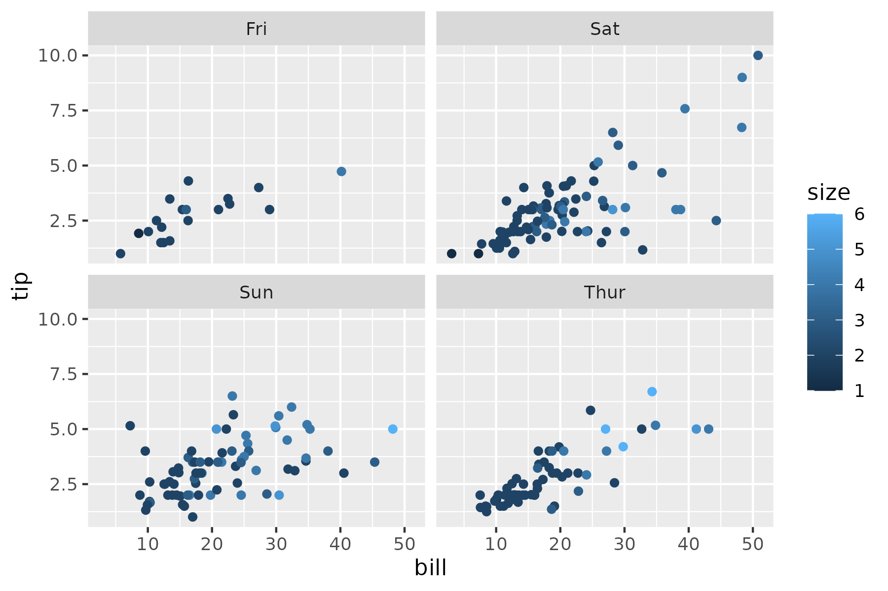
Depending on your setup, there are different options available to display images. I know of four options, each with their own advantages and disadvantages: (1) as a textual representation, (2) as an inline image, (3) using an image viewer, and (4) using a browser. Let’s go through them quickly.
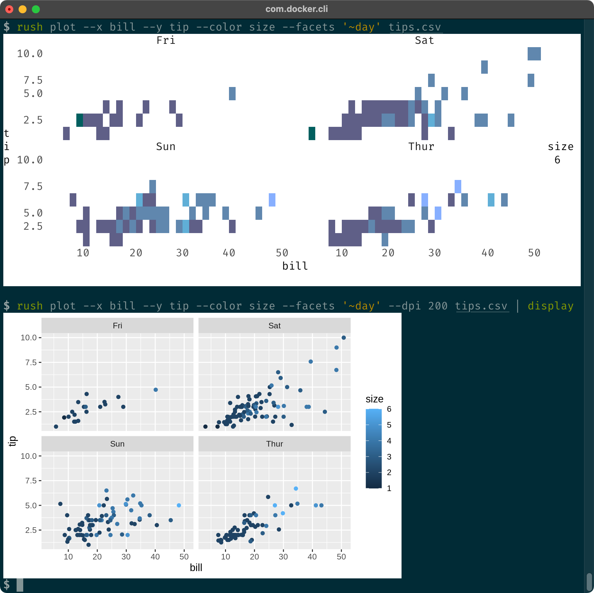
Option 1 is to display the image inside the terminal as shown at the top of Figure 7.2. This output is generated by rush when the standard output is not redirected to a file. It’s based on ASCII characters and ANSI escape sequences, so it’s available in every terminal. Depending on how you’re reading this book, the output you get when you run this code might or might not match the screenshot in Figure 7.2.
rush plot --x bill --y tip --color size --facets '~day' tips.csv
Fri Sat
10.0
7.5
5.0
2.5
t size
i Sun Thur 6
p 10.0 1
7.5
5.0
2.5
10 20 30 40 50 10 20 30 40 50
bill If you only see ASCII characters, that means the medium on which you’re reading this book doesn’t support the ANSI escape sequences responsible for the colors. Fortunately, if you run the above command yourself, it will look just like the screenshot.
Option 2, as seen at the bottom of Figure 7.2, also displays images inside the terminal. This is the iTerm2 terminal, which is only available for macOS and uses the Inline Images Protocol through a small script (which I have named display). This script is not included with the Docker image, but you can easily install it:
curl -s "https://iterm2.com/utilities/imgcat" > display && chmod u+x displayIf you’re not using iTerm2 on macOS, there might be other options available to display images inline. Please consult your favorite search engine.
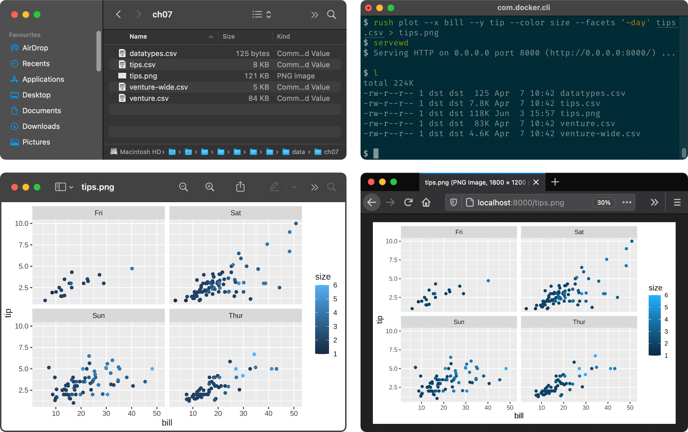
Option 3 is to manually open the image (tips.csv in this example) in an image viewer. Figure 7.3 shows, on the left, the file explorer (Finder) and image viewer (Preview) on macOS. When you’re working locally, this option always works. When you’re working inside a Docker container, you can only access the generated image from your OS when you’ve mapped a local directory using the -v option. See Chapter 2 for instructions on how to do this. An advantage of this option is that most image viewers automatically update the display when the image has changed, which allows for quick iterations as you fine-tune your visualization.
Option 4 is to open the image in a browser. The right side of Figure 7.3 is a screenshot of Firefox showing http://localhost:8000/tips.png. Any browser will do, but you need two other prerequisites for this option to work. First, you need to have made a port (port 8000 in this example) accessible on the Docker container using the -p option. (Again, see Chapter 2 for instructions on how to do this.) Second, you need to start a webserver. For this, the Docker container has a small tool called servewd5, which serves the current working directory using Python:

bat $(which servewd)
───────┬────────────────────────────────────────────────────────────────────────
│ File: /usr/bin/dsutils/servewd
───────┼────────────────────────────────────────────────────────────────────────
1 │ #!/usr/bin/env bash
2 │ ARGS="$@"
3 │ python3 -m http.server ${ARGS} 2>/dev/null &
───────┴────────────────────────────────────────────────────────────────────────You only need to run servewd once from a directory (for example, /data/) and it will happily run in the background. Once you’ve plotted something, you can visit localhost:8000 in your browser and access the contents of that directory and all of its subdirectories. The default port is 8000, but you can change this by specifying it as an argument to servewd:
servewd 9999Just make sure that this port is accessible. Because servewd runs in the background, you need to stop it as follows:
pkill -f http.serverOption 4 can also work on a remote machine.
Now that we’ve covered four options to display images, let’s move on to actually creating some.
7.4.2 Plotting in a Rush
When it comes to creating data visualizations, there’s a plethora of options. Personally, I’m a staunch proponent of ggplot2, which is a visualization package for R. The underlying grammar of graphics is accompanied by a consistent API that allows you to quickly and iteratively create different types of beautiful data visualizations while rarely having to consult the documentation. A welcoming set of properties when exploring data.
We’re not really in a rush, but we also don’t want to fiddle too much about any single visualization. Moreover, we’d like to stay at the command line as much as possible. Luckily, we still have rush, which allows us to ggplot2 from the command line. The data visualization from Figure 7.1 could have been created as follows:
rush run --library ggplot2 'ggplot(df, aes(x = bill, y = tip, color = size)) +
geom_point() + facet_wrap(~day)' tips.csv > tips.pngHowever, as you may have noticed, I have used a very different command to create tips.png:
rush plot --x bill --y tip --color size --facets '~day' tips.csv > tips.pngWhile the syntax of ggplot2 is relatively concise, especially considering the flexibility it offers, there’s a shortcut to create basic plots quickly. This shortcut is available through the plot subcommand of rush. This allows you to create beautiful basic plots without needing to learn R and the grammar of graphics.
Under the hood, rush plot uses the function qplot from the ggplot2 package. Here’s the first part of its documentation:
R -q -e '?ggplot2::qplot' | trim 14
?ggplot2::qplot
qplot package:ggplot2 R Documentation
Quick plot
Description:
‘qplot()’ is now deprecated in order to encourage the users to
learn ‘ggplot()’ as it makes it easier to create complex graphics.
Usage:
qplot(
x,
… with 104 more linesI agree with this advice; once you’re done reading this book, it’ll be worthwhile to learn ggplot2, especially if you want to upgrade any exploratory data visualizations into ones that are suitable for communication. For now, while we’re at the command line, let’s take that shortcut.
As Figure 7.2 already showed, rush plot can create both graphical visualizations (consisting of pixels) and textual visualizations (consisting of ASCII characters and ANSI escape sequences) with the same syntax. When rush detects that its output is piped to another command (such as display or redirected to a file such as tips.png it will produce a graphical visualization; otherwise it will produce a textual visualization.
Let’s take a moment to read through the plotting and saving options of rush plot:
rush plot --help
rush: Quick plot
Usage:
rush plot [options] [--] [<file>...]
Arguments:
<file> Data file(s) to read before plotting. The reader is
chosen by extension: '.parquet'/'.pq' via
nanoparquet, '.duckdb'/'.ddb' via DuckDB, everything
else as delimited text. A single file is read into a
data frame named 'df'; use '-' or omit to read
delimited text from standard input. Multiple files
are each read into a named element of a list 'dfs';
combine them into 'df' yourself with the --pre
option, e.g. 'df <- dplyr::bind_rows(dfs)'.
Reading options:
-d, --delimiter <str> Delimiter (input and output) [default: ,].
--input-delimiter <str> Input delimiter (overrides -d).
-F, --input-format <format> Input format [default: auto].
--input-sheet <name|int> Excel sheet to read.
--names <a,b,c> Column names (implies no input header).
-C, --no-clean-names No clean names.
-H, --no-header No header (input and output).
--no-input-header No input header.
--no-output-header No output header.
Setup options:
-l, --library <name> Libraries to load.
-t, --tidyverse Enter the Tidyverse.
Plotting options:
--aes <key=value> Additional aesthetics.
-a, --alpha <name> Alpha column.
-c, --color <name> Color column.
--facets <formula> Facet specification.
-f, --fill <name> Fill column.
-g, --geom <geom> Geometry [default: auto].
--group <name> Group column.
--log <x|y|xy> Variables to log transform.
--margins Display marginal facets.
--post <code> Code to run after plotting.
--pre <code> Code to run before plotting.
--shape <name> Shape column.
--size <name> Size column.
--title <str> Plot title.
-x, --x <name> X column.
--xlab <str> X axis label.
-y, --y <name> Y column.
--ylab <str> Y axis label.
-z, --z <name> Z column.
Saving options:
--dpi <int> Plot resolution [default: 300].
--head <int> Limit output rows.
--height <num> Plot height.
-o, --output <str> Output file.
-D, --output-delimiter <str> Output delimiter (overrides -d).
-O, --output-format <format> Output format [default: auto].
--output-indent <int> Indentation level (JSON, YAML) [default: 2].
--output-record <str> Record element name (XML, TOML) [default: record
].
--output-root <str> Root element name (XML) [default: root].
--output-sheet <str> Excel sheet name to write.
--units <str> Plot size units [default: in].
-w, --width <num> Plot width.
General options:
-n, --dry-run Only print generated script.
-h, --help Show this help.
-I, --no-ir Run with Rscript, not ir.
-R, --no-rush Inline all code (no rush dep).
--seed <int> Seed random number generator.
-v, --verbose Be verbose.
--version Show version.The most important options are the plotting options that take a <name> as an argument. For example, the --x option allows you to specify which column should be used to determine where things should be placed along the x axis. The same holds for the --y option. The --color and --fill options are used to specify which column you want to use for coloring. You can probably guess what the --size and --alpha options are about. Other common options are explained throughout the sections as I create various visualizations. Note that for each visualization, I first show its textual representation (ASCII and ANSI characters) and then its visual representation (pixels).
7.4.3 Creating Bar Charts
Bar charts are especially useful for displaying the value counts of a categorical feature. Here’s a textual visualization of the time feature in the tips dataset:
rush plot --x time tips.csv
150
c 100
o
u
n
t 50
0
Dinner Lunch
time Figure 7.4 shows the graphical visualization, which is created by rush plot when the output is redirected to a file.
rush plot --x time tips.csv > plot-bar.png
display plot-bar.png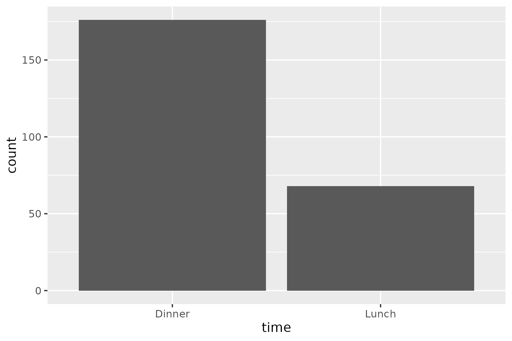
The conclusion we can draw from this bar chart is straightforward: there are more than twice as many data points for dinner than lunch.
7.4.4 Creating Histograms
The counts of a continuous variable can be visualized with a histogram. Here, I have used the time feature to set the fill color. As a result, rush plot conveniently creates a stacked histogram.
rush plot --x tip --fill time tips.csv
40
30
c time
o Dinner
u 20 Lunch
n
t
10
0
2.5 5.0 7.5 10.0
tip Figure 7.5 shows the graphical visualization.
Allow me to demonstrate two syntax shortcuts that you may find useful. The two exclamation marks (!!) get replaced with the previous command. The exclamation mark and dollar sign (!$) get replaced by the last part of the previous command, which is the filename plot-histogram.png. As you can see, the updated commands are first printed by the Z shell so you know exactly what it executes. These two shortcuts can save a lot of typing, but they’re not easy to remember.
!! > plot-histogram.png
rush plot --x tip --fill time tips.csv > plot-histogram.png
display !$
display plot-histogram.png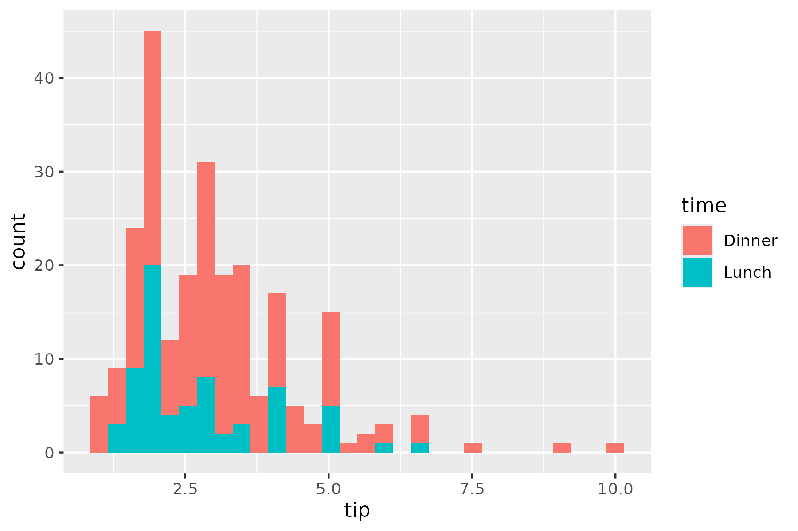
This histogram reveals that most tips are around 2,5 USD. Because the two groups dinner and lunch groups are stacked on top of each other and show absolute counts, it’s difficult to compare them. Perhaps a density plot can help with this.
7.4.5 Creating Density Plots
A density plot is useful for visualizing the distribution of a continuous variable. rush plot uses heuristics to determine the appropriate geometry, but you can override this with the geom option:
rush plot --x tip --fill time --geom density tips.csv
0.5
0.4
d 0.3
e time
n Dinner
s 0.2 Lunch
i
t
y 0.1
0.0
2.5 5.0 7.5 10.0
tip In this case, the textual representation really shows its limitations when compared to the visual representation in Figure 7.6.
rush plot --x tip --fill time --geom density tips.csv > plot-density.png
display plot-density.png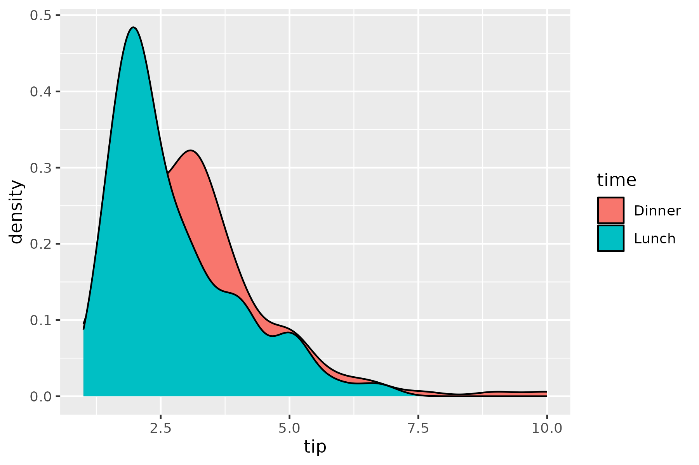
7.4.6 Happy Little Accidents
You’ve already seen three types of visualizations. In ggplot2, these correspond to the functions geom_bar, geom_histogram, and geom_density. geom is short for geometry and dictates what is actually being plotted. This cheat sheet for ggplot2 provides a good overview of the available geometry types. Which geometry types you can use depend on the columns (and their types) you specify. Not every combination makes sense. Take this line plot for example.
rush plot --x tip --y bill --color size --size day --geom path tips.csv
50
40
day
Fri
b 30 Sat
i Sun
l Thur
l 20
6ize
5
10
2.5 5.0 7.5 10.0
tip This happy little accident becomes clearer in the visual representation in Figure 7.7.
rush plot --x tip --y bill --color size --size day --geom path tips.csv > plot
-accident.png
display plot-accident.png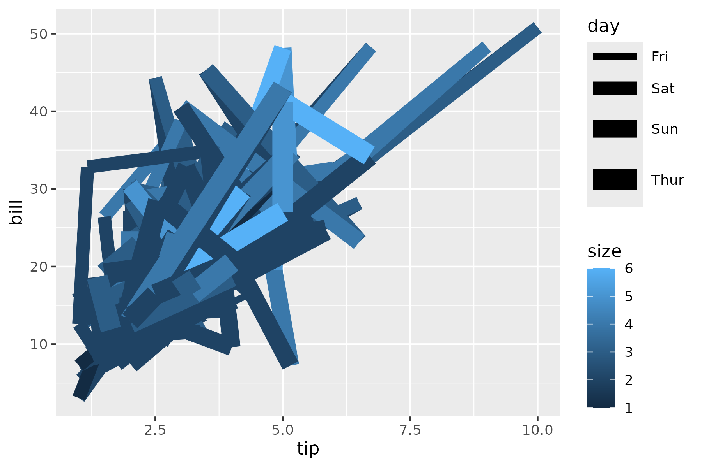
The rows in tips.csv are independent observations, whereas drawing a line between the data points assumes that they are connected. It’s better to visualize the relationship between the tip and the bill with a scatter plot.
7.4.7 Creating Scatter Plots
A scatter plot, where the geometry is a point, happens to be the default when specifying two continuous features:
rush plot --x bill --y tip --color time tips.csv
10.0
7.5
t time
i Dinner
p 5.0 Lunch
2.5
10 20 30 40 50
bill Note that the color of each point is specified with the --color option (and not with the --fill option). See Figure 7.8 for the visual representation.
rush plot --x bill --y tip --color time tips.csv > plot-scatter.png
display plot-scatter.png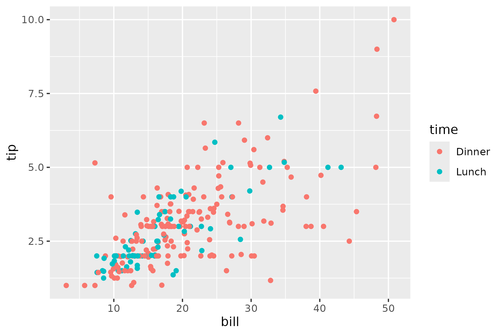
From this scatter plot we may conclude that there’s a relationship between the amount of the bill and the tip. Perhaps we it’s useful to examine this data from a higher level by creating trend lines.
7.4.8 Creating Trend Lines
If you override the default geometry with smooth, you can visualize trend lines. These are useful for seeing the bigger picture.
rush plot --x bill --y tip --color time --geom smooth tips.csv
7.5
t 5.0 time
i Dinner
p Lunch
2.5
0.0
10 20 30 40 50
bill rush plot cannot handle transparency, so a visual representation (see Figure 7.9 is much better in this case.
rush plot --x bill --y tip --color time --geom smooth tips.csv > plot-trend.pn
g
display plot-trend.png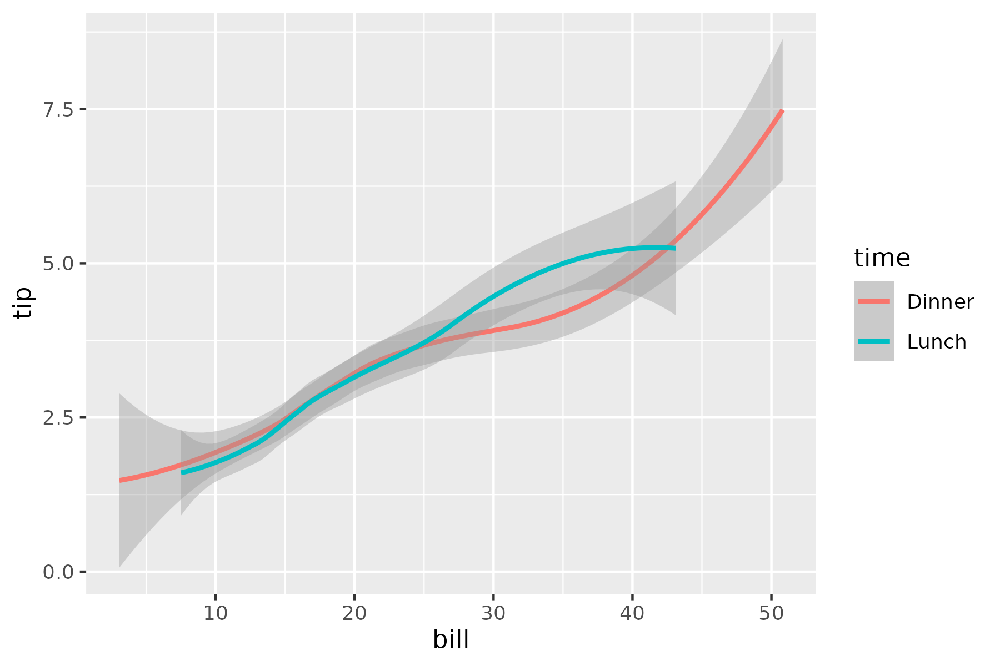
If you like to visualize the original points along with the trend lines, you need to resort to writing ggplot2 code with rush run (see Figure 7.10).
rush run --library ggplot2 'ggplot(df, aes(x = bill, y = tip, color = time)) +
geom_point() + geom_smooth()' tips.csv > plot-trend-points.png
display plot-trend-points.png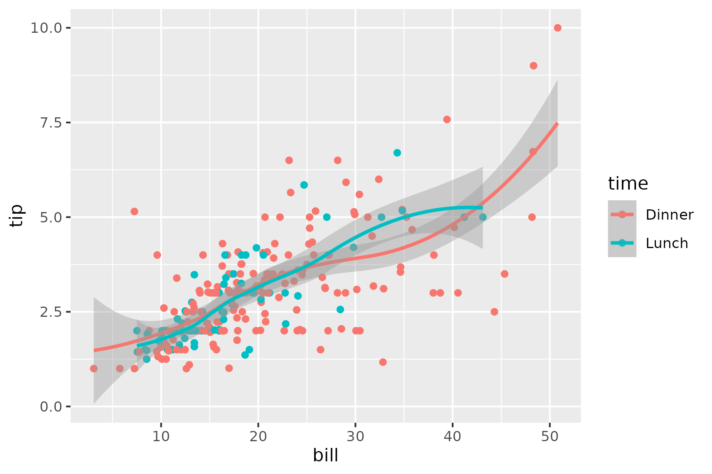
7.4.9 Creating Box Plots
A box plot visualizes, for one or more features, a five-number summary: the minimum, the maximum, the sample median, and the first and third quartiles. In this case we need to convert the size feature to a categorical one using the factor() function, otherwise all values of the bill feature will be lumped together.
rush plot --x 'factor(size)' --y bill --geom boxplot tips.csv
50
40
b 30
i
l
l 20
10
1 2 3 4 5 6
factor(size) While the textual representation is not too bad, the visual one is much clearer (see Figure 7.11).
rush plot --x 'factor(size)' --y bill --geom boxplot tips.csv > plot-boxplot.p
ng
display plot-boxplot.png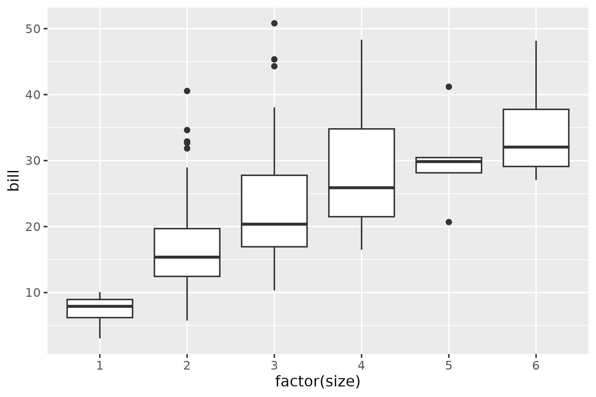
Unsurprisingly, this box plot shows that, on average, a larger party size leads to a higher bill.
7.4.10 Adding Labels
The default labels are based on column names (or specification). In the previous image, the label factor(size) should be improved. Using the --xlab and --ylab options you can override the labels of the x and y axes. A title can be added with the --title option. Here’s a violin plot (which is a mashup of a box plot and a density plot) demonstrating this (see also Figure 7.12.
rush plot --x 'factor(size)' --y bill --geom violin --title 'Distribution of b
ill amount per party size' --xlab 'Party size' --ylab 'Bill (USD)' tips.csv
Distribution of bill amount per party size
50
40
B
i
l 30
l
( 20
U
S 10
D
)
1 2 3 4 5 6
Party size rush plot --x 'factor(size)' --y bill --geom violin --title 'Distribution of b
ill amount per party size' --xlab 'Party size' --ylab 'Bill (USD)' tips.csv > pl
ot-labels.png
display plot-labels.png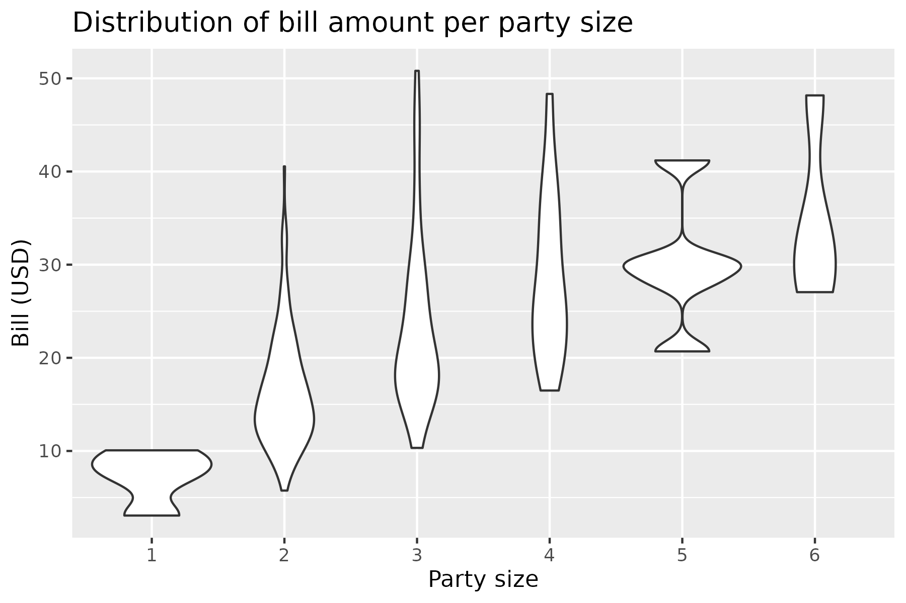
Annotating your visualization with proper labels and a title is especially useful if you want to share it with others (or your future self) so that it’s easier to understand what’s being shown.
7.4.11 Going Beyond Basic Plots
Although rush plot is suitable for creating basic plots when you’re exploring data, it certainly has its limitations. Sometimes you need more flexibility and sophisticated options such as multiple geometries, coordinate transformations, and theming. In that case it might be worthwhile to learn more about the underlying package from which rush plot draws its capabilities, namely the ggplot2 package for R. When you’re more into Python than R, there’s the plotnine package, which is reimplementation of ggplot2 for Python.
7.5 Summary
In this chapter we’ve looked at various ways to explore your data. Both textual and graphical data visualizations have their pros and cons. The graphical ones are obviously of much higher quality, but can be tricky to view at the command line. This is where textual visualizations come in handy. At least rush has, thanks to R and ggplot2, a consistent syntax for creating both types.
The next chapter is, once again, an intermezzo chapter in which I discuss how you can speed up your commands and pipelines. Feel free to read that chapter later if you can’t wait to start modeling your data in Chapter 9.
7.6 For Further Exploration
- A proper
ggplot2tutorial is unfortunately beyond the scope of this book. If you want to get better at visualizing your data I strongly recommend that you invest some time in understanding the power and beauty of the grammar of graphics. Chapters 3 and 28 of the book R for Data Science by Hadley Wickham and Garrett Grolemund are an excellent resource. - Speaking of Chapters 3 and 28, I translated those to Python using Plotnine and Pandas in case you’re more into Python than R.
Mark Nudelman, less – Opposite of more, version 551, 2019, https://www.greenwoodsoftware.com/less.↩︎
Christopher Groskopf, csvstat – Print Descriptive Statistics for Each Column in a CSV File, version 1.0.5, 2020, https://csvkit.rtfd.org.↩︎
Jeroen Janssens, rush – R One-Liners from the Shell, version 0.1, 2021, https://github.com/jeroenjanssens/rush.↩︎
The R Foundation for Statistical Computing, R – a Language and Environment for Statistical Computing, version 4.0.4, 2021, https://www.r-project.org.↩︎
Jeroen Janssens, servewd – Serve the Current Working Directory Using a Simple HTTP Server, version 0.1, 2021, https://github.com/jeroenjanssens/dsutils.↩︎